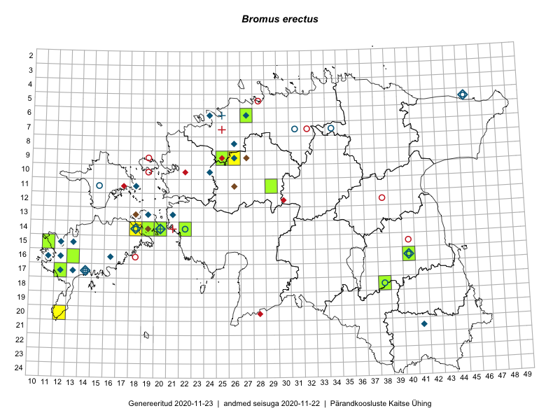

Bromus erectus
Uuendatud: 2016-12-01
Kaardile koondatud taksonid: Bromus erectus Huds.

Kaart põhineb 12 kirjel, neist vaatlusi 10 ja eksemplare 2.
Viited andmebaasikirjetele
- Meeli Mesipuu: 2015-07-11: 14-19: ala
- Mari Reitalu: 2015-06-19: 17-12: ala
- Mari Reitalu: 2015-06-19: 17-12: GPS punkt
- Mari Reitalu, Oliver Parrest: 2015-07-27: 16-13: ala
- Mari Reitalu, Oliver Parrest: 2015-07-27: 16-13: GPS punkt
- Vivika Väli, Ülo Väli: 2015-07-27: 20-41: ala
- Thea Kull, Oliver Parrest: 2016-07-06: 09-26: ala
- Sirje Azarov, Mari Reitalu: 2016-08-10: 14-18: GPS punkt
- Meeli Mesipuu: 2016-06-29: 14-19: ala
- Meeli Mesipuu: 2016-06-29: 14-19: GPS punkt
- Peedu Saar: 2015-07-01: 15-11: GPS punkt
- Thea Kull, Oliver Parrest: 2016-07-06: 09-25: GPS punkt